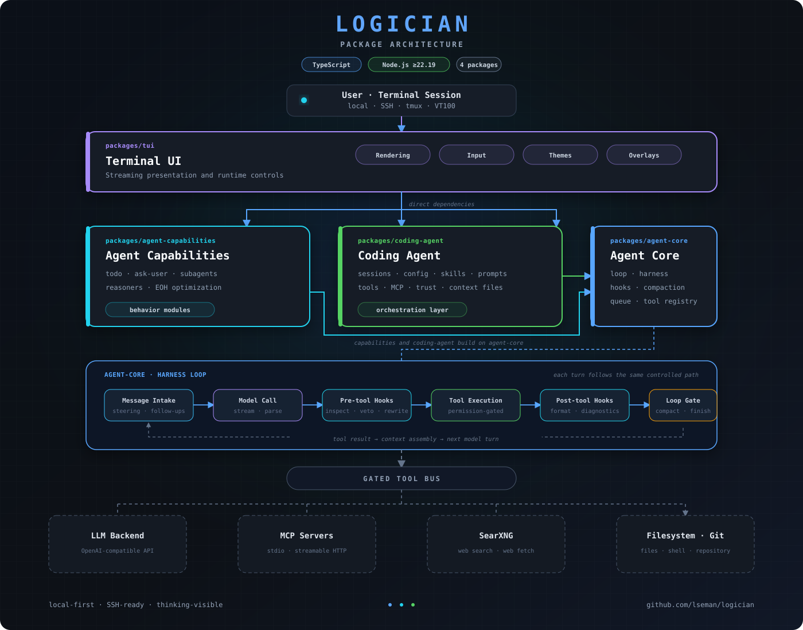
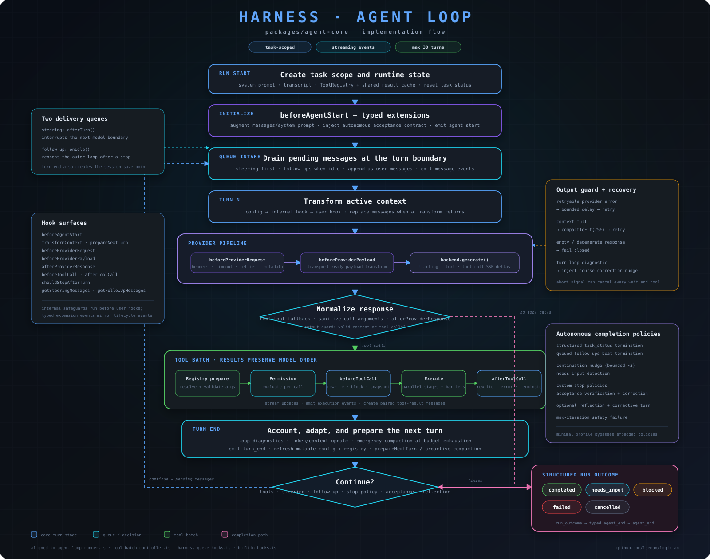

A TypeScript monorepo of five packages arranged as a fan-in: everything sits on a minimal agent engine, capabilities and memory build on that engine independently, and the coding agent + terminal UI pull the rest together into one running process.
Everything runs locally in a single Node process. No services to orchestrate — packages are TypeScript workspaces, not network boundaries.

Package.json dependencies form a diamond, not a strict top-to-bottom layer cake:
agent-core has no internal dependencies — it's the foundation every other
package builds on.agent-capabilities and observational-memory are siblings: both
depend only on agent-core, not on each other.coding-agent is the orchestration layer — it pulls together
agent-core, agent-capabilities, and
observational-memory into one bridge.tui sits on top of everything: agent-core,
agent-capabilities, and coding-agent.@logician/agent-core
AgentHarness and runAgentLoop() drive the turn loop:
intake → model call → tool execution → hooks → next turn.hooks/{builtin,extensions,native} — pre/post-tool hook chains,
budget tracking, hook metrics.message-queue/ — steering, follow-ups, and queued input between
turns.compaction/ — context compaction and recovery when a session
approaches its token budget.compatibility/claude-code/ — a Claude Code compatibility layer
(hooks, plugin executor/manager).tools/shared/ — permissions, tool-call parsing, plugin loading, the
tool registry.OpenAIBackend),
with typed, retryable BackendError.@logician/agent-capabilities
todo/ — task tracking with status transitions.ask-user/ — structured prompts back to the user mid-turn.subagents/ — child-agent spawning and delegation, isolated
worktrees/context.reasoners/ — nine strategies: SSR, Tree of Thoughts, Graph of
Thoughts, Reflexion, Best-of-N, Self-Consistency, Auto-CoT, In-Context CoT, plus a
shared base + registry.eoh/ — an evolutionary optimization engine (population, evaluator).
Opt-in: not re-exported from the package's main entry point.@logician/coding-agent
runtime/bridge.ts (AgentCoreBridge) — the largest file
in the repo; connects harness, capabilities, memory, and tools into one runtime.
runtime/ also holds LoopManager,
GoalManager, an LSP manager for language-server integration, and
post-edit diagnostics.tools/ — file ops, search, system, and web tools (see tool table
below).mcp/ — an MCP client with both StdioMcpClient and
HttpMcpClient (streamable HTTP) transports, plus a connection
manager.sessions/ — SessionStore and transcript persistence,
including bookmarks and rewind.context-files/, trust/,
commands/slash-commands.ts — repo context loading, permission
trust, and the slash-command registry.@logician/observational-memory
observer.ts / reflector.ts / dropper.ts —
capture, reflect on, and prune memory entries.consolidation.ts (ConsolidationPipeline) — merges and
compresses observations over time.knowledge-graph.ts + recall.ts — structured retrieval
across sessions.store.ts / persistence.ts — MemoryStoreImpl
over FilePersistence, local-first, no external DB.coding-agent/sessions
and agent-core's file-checkpoints, not here.@logician/tui
layers/presentation — rendering pipeline.layers/input — keybindings, input bar, steering queue.layers/theme — theme system, theme selector.layers/events / layers/core — event plumbing, TUI core
state machine.components/ — status bar, transcript display, MCP manager, reasoner
selector, EOH panel, popups/overlays.exec and doctor CLI modes before
booting the interactive TUI.Every turn moves through the same pipeline, whether it's a plain chat message, a tool call, or a subagent delegating back to its parent.

permissionMode (acceptAll,
acceptEdits, ask, plan).Everything the agent can touch outside its own memory goes through a typed tool call — visible, loggable, and gated by the permission mode.
coding-agent/mcp.
web_search / web_fetch against a local or
remote SearXNG instance.bash, ripgrep-backed grep, fd/find-backed
find, and git status/diff/log.